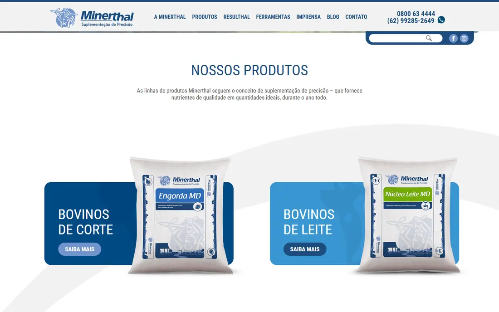
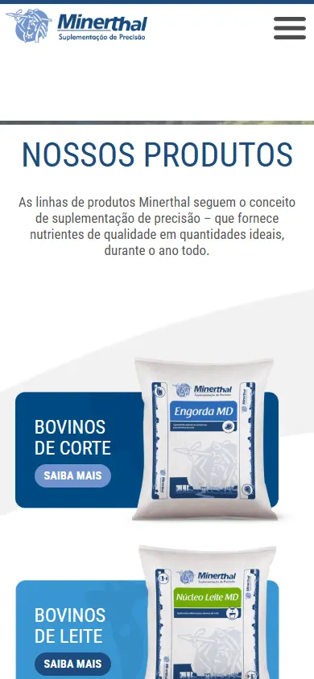

O que o pecuarista encontra quando procura a Minerthal.
Uma leitura feita só com informação pública: o site, o Google e três empresas do setor.
Vendesuplementos minerais e proteicos para bovinos, com mais de 40 produtosParapecuaristas de corte e de leitePosição“suplementação de precisão”
O placar
Base técnica
Velocidade no celular ≥ 50
Conteúdo em até 2,5 s
Endereço sem “www” abre
http leva para https
Sistema atualizado
Servidor com suporte
Imagens leves
Ser encontrado
Título diz o que faz
Descrição no Google
Dados da empresa
Perguntas e respostas
Arquivo para IAs
Mapa do site em dia
Blog em dia
Converter
WhatsApp na página inicial
Formulário de contato
Contato em cada produto
Onde comprar
Formulário que qualifica
Velocidade no celular
34/100
Abaixo de 50 é ruim.
Até o conteúdo aparecer
10,8 s
O Google considera bom até 2,5 s.
Linguagem do servidor
PHP 5.6
Sem correções de segurança desde 2018.
Último texto do blog
ago/2025
14 meses sem publicar.
1 · Como a Minerthal aparece hoje

Site atual · computador

Celular
O endereço sem “www” não abreQuem digita minerthal.com.br recebe erro.
Servidor sem suporte de segurançaPHP 5.6, sem correções desde 2018, e WordPress 5.2, de 2019.
O Google não sabe o que a empresa fazTítulo “Minerthal Home”, nenhuma descrição, e a página abre com “Nossos produtos”.
Produto sem próximo passoNa página de produto que abrimos, o único botão é “Fazer download”.
Imagens pesadas e sem descrição38 PNG e 6 JPG na página inicial. 36 estão sem texto alternativo.
Blog bom, mas paradoTextos técnicos sobre seca, desmame e pré-parto. O último é de 18/08/2025.
2 · Velocidade
Nota do Google, de 0 a 100
CelularComputador
Minerthal
34
47
Matsuda
36
63
Connan
35
56
Premix
21
51
Até o conteúdo aparecer
No celular. Bom: até 2,5 s
Minerthal
10,8 s
Matsuda
27,6 s
Connan
26,2 s
Premix
15,7 s
No celular, as quatro são lentas. No computador, a Minerthal tem a menor nota das quatro.
3 · Conteúdo e redes
Último texto publicado
Meses sem publicar
Minerthal
08/2025
Matsuda
06/2026
Connan
09/2026
Premix
09/2026
Seguidores no Instagram
Número público do perfil
Minerthal
6.691
Matsuda
58 mil
Connan
s/d
Premix
37 mil
A Minerthal é a única sem texto novo em 2026. No Instagram, publicou tanto quanto a Premix e tem menos de um quinto dos seguidores.
4 · O que o Google e as IAs leem
Minerthal
Matsuda
Connan
Premix
Título diz o que a empresa faz
✕
✕
✕
✕
Descrição da página
✕
✓
✕
✕
Dados estruturados da empresa
✕
✕
✓
✓
Perguntas e respostas marcadas
✕
✕
✕
✕
Arquivo para assistentes de IA
✕
✕
✕
✕
Endereço sem “www” abre
✕
✓
✓
✓
http leva para https
✕
✓
✓
✓
Imagens em formato leve
✕
✓
✓
✕
Texto novo em 2026
✕
✓
✓
✓
Nenhuma das quatro responde perguntas para o Google nem para as IAs. Quem fizer primeiro ocupa esse espaço.
5 · O que o mercado pesquisa
sal mineral para gado…
sal mineral para gado 25 kg preçosal mineral para gado pode ser consumido por humanossal mineral para gado 25 kgsal mineral para gado de leitesal mineral para gado preçosal mineral para gado de cortesal mineral para gado qual o melhorsal mineral para gado matsudasal mineral para gado 50 kg
proteinado para…
proteinado para gadoproteinado para bezerrosproteinado para bovinosproteinado para vaca de leiteproteinado para cavaloproteinado para gado na secaproteinado para bezerros desmamadosproteinado para secaproteinado para gado de corte
suplemento para gado…
suplemento para gado de cortesuplemento para gado engordasuplemento para gado de leitesuplemento para gado na secasuplemento para gado adesuplemento para gado magrosuplemento mineral para gadomub suplemento para gadosuplemento mineral para gado de corte
sal mineral…
sal mineral integralsal mineral para cavalosal mineral para gadosal mineral para humanossal mineral para ovinossal mineral para equinossal mineral tortugasal mineral para vaca de leitesal mineral matsuda
Na busca pela categoria, o Google sugere Matsuda e Tortuga. Quem digita “minerthal” procura o produto pelo nome: 160 MD, 80, Extra.
6 · O que modernizar
Hoje
Proposta
Primeira tela
Título “Nossos produtos” e dois cartões
Uma frase que diz o que a empresa faz, foto do campo e dois botões
Imagens
PNG e JPG, todas baixadas de uma vez
WebP, carregando só quando aparecem
Construção
WordPress 5.2, 10 plugins e 33 scripts
Tema próprio, com um CSS e um JS
Catálogo
Lista em páginas e ficha para download
Filtro por fase e época, com contato em cada produto
Endereços
Mapa de 2018, todo em http
Mapa automático, tudo em https
7 · Três oportunidades
1
Arrumar a base
Servidor atual, os mesmos endereços e o domínio sem “www” funcionando.
Impacto altoEsforço médio
2
Dar um próximo passo no produto
Botão de contato em cada produto e um formulário que pergunta rebanho, fase e região.
Impacto altoEsforço baixo
3
Virar a resposta do setor
Retomar o blog e responder as dúvidas mais comuns em cada página de produto.
✓atendido✕falta→resolvido na migração para o servidor de vocês
O conteúdo aparece em 2,7 s, quatro vezes mais rápido que hoje (10,8 s). Ainda fica um pouco acima da meta de 2,5 s, o que é esperado num protótipo: o ajuste fino é feito na versão final, já no servidor de vocês. O blog e a página “onde comprar” dependem de informações da Minerthal.
Notas do Google no celular
Site atualModelo
Velocidade
34
89
Acessibilidade
63
100
Boas práticas
88
100
SEO técnico
77
100
Conteúdo na tela
10,8 s2,7 s
No celular, quatro vezes mais rápido
Peso da página
3,3 MB0,4 MB
Oito vezes menor
Arquivos pedidos
10422
Ao abrir a página
Serviços de terceiros
90
Endereços externos
O que só os dados de vocês respondem
Quem chega ao site, e por qual busca?
Quantos contatos viram venda?
Quais produtos e regiões puxam a procura?
Quanto tempo leva a primeira resposta?
Próximo passo: uma conversa de 30 minutos.
Vocês nos contam o que querem vender mais e para quem. Decidimos juntos se faz sentido abrir os dados para um diagnóstico completo.
Como medimos e os limites desta análise
Usamos só informação pública. Não tivemos acesso a tráfego, vendas nem a nenhum sistema da Minerthal.
Notas: Lighthouse, ferramenta do Google, rodado em nosso computador em 13/10/2026, com 3 rodadas e o valor do meio. O PageSpeed Insights on-line usa a mesma ferramenta e pode dar alguns pontos de diferença.
A comparação olha só a página inicial de cada empresa. A da Matsuda é a página do grupo.
Concorrentes escolhidas por nós: Matsuda, Connan e Premix. Se houver outras mais próximas, refazemos.
Último texto publicado: a data mais recente encontrada no blog ou na área de notícias de cada site.
Instagram: números públicos de cada perfil. “s/d” quer dizer que o Instagram não mostrou o número. Não analisamos as publicações.
Buscas: o que o Google sugere ao digitar, no Brasil. Não medimos o volume de buscas nem a posição de cada site.
Versões de PHP e WordPress: as que o próprio site informa. Lemos uma página de produto (MinerBlock Cria MD).
O modelo tem a página inicial e três páginas internas. Não é o site completo. O placar do modelo foi conferido no ar em 13/10/2026.